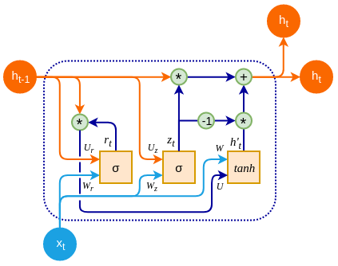

flowchart LR input1[input] neuron1[neuron] output1[output] input1 --> neuron1 neuron1 --> output1 neuron1 --> neuron1
22: Transformers
Session 22: Transformers
Learning objectives:
- Revise understanding of long-term memory
- Explore text encoder-decoder modeling
- image credit: StatQuest
Main Example
Deutsch
I did ask a German person to check my translation. They kindly informed me that German data scientists tend to say “data science” instead of “Datenwissenschaft”.
I opted for the large compound word to fermet discussion about the grammatical differences.
Recall: RNNs
Gradient Propagation
- we have vanishing gradients if \(|w_{h,h}| < 1\)
- we have exploding gradients if \(|w_{h,h}| > 1\)
LSTMs
LSTM
Each module of a Long Short Term Memory (LSTM) network has
- 3 inputs: data input, long-term memory (aka forget gate), short-term memory (aka output gate)
and outputs new values for the forget gate and the output gate

- image source: Chris Olah
867-5309
TO DO: apply LSTM to the “8675309” sequence of integers
GRUs
GRU
Each module of a Gated Recurrent Unit (GRU) network has
- 2 inputs: data input, long-term memory (aka forget gate)
and outputs a new value for the forget gate along with the data prediction. Hence, the GRU architecture is simpler than an LSTM, but can produce similar results.

- image source: O’Reilly

- image source: Harshed Abdulla
Long-term memory
Both LSTM and GRU architectures allow for processing of sequences of data while avoiding the vanishing gradient problem.
Position Encoding
Indexing
At this moment, we wish to keep track of word order (i.e. where they are in a sentence). A first draft is to create an index column:
- I
- want
- to
- learn
- data
- science
Motivation
However, as developers explored positional embedding, they wanted a system that satisfied useful qualities such as
- distinguish between small and large distances
- bounded values (between zero and one)
- invariant to sequence length
- deterministic (does not depend on RNG seed or initial values)
source: Harrison Pim
Fourier Series
- image source: Kemal Erdem
Attention
Encoder
Main Example
Let us try running through our main example through a trained transformer
Word Encoding
We start out with one-hot encoding of the input multiplied by the encoder weights:
\[\begin{pmatrix} 1 & 0 & 0 & 0 & 0 & 0 & 0 \\ 0 & 1 & 0 & 0 & 0 & 0 & 0 \\ 0 & 0 & 1 & 0 & 0 & 0 & 0 \\ 0 & 0 & 0 & 1 & 0 & 0 & 0 \\ 0 & 0 & 0 & 0 & 1 & 0 & 0 \\ 0 & 0 & 0 & 0 & 0 & 1 & 0 \\ 0 & 0 & 0 & 0 & 0 & 0 & 1 \end{pmatrix}\begin{pmatrix} 0.34 & 0.13 \\ 0.23 & 0.23 \\ -1.12 & -0.19 \\ 2.21 & -0.64 \\ 0.46 & 0.27 \\ 0.53 & 0.81 \\ 1.11 & -1.69 \end{pmatrix} = \begin{pmatrix} 0.34 & 0.13 \\ 0.23 & 0.23 \\ -1.12 & -0.19 \\ 2.21 & -0.64 \\ 0.46 & 0.27 \\ 0.53 & 0.81 \\ 1.11 & -1.69 \end{pmatrix}\]
Position Encoding
Next, we get our position encoding values
- \(n_{\text{input}} = 7\)
- \(d_{\text{model}} = 2\)
\[\begin{pmatrix} 0.84 & 0.54 \\ 0.91 & -0.42 \\ 0.14 & -0.99 \\ -0.76 & -0.65 \\ -0.96 & 0.28 \\ -0.28 & 0.96 \\ 0.66 & 0.75 \end{pmatrix}\]
and then the word embedding plus position encoding is
\[\begin{pmatrix} 0.34 & 0.13 \\ 0.23 & 0.23 \\ -1.12 & -0.19 \\ 2.21 & -0.64 \\ 0.46 & 0.27 \\ 0.53 & 0.81 \\ 1.11 & -1.69 \end{pmatrix} + \begin{pmatrix} 0.84 & 0.54 \\ 0.91 & -0.42 \\ 0.14 & -0.99 \\ -0.76 & -0.65 \\ -0.96 & 0.28 \\ -0.28 & 0.96 \\ 0.66 & 0.75 \end{pmatrix} = \begin{pmatrix} 1.18 & 0.67 \\ 1.14 & -0.19 \\ -0.98 & -1.18 \\ 1.45 & -1.29 \\ \frac{-1}{2} & 0.55 \\ \frac{1}{4} & 1.77 \\ 1.77 & -0.94 \end{pmatrix}\]
Self-Attention
Queries
We find the queries by multiplying the encoded values by the transpose of the query weights:
\[\begin{pmatrix} 1.18 & 0.67 \\ 1.14 & -0.19 \\ -0.98 & -1.18 \\ 1.45 & -1.29 \\ \frac{-1}{2} & 0.55 \\ \frac{1}{4} & 1.77 \\ 1.77 & -0.94 \end{pmatrix}\begin{pmatrix} 0.07 & 0.64 \\ -0.70 & -0.60 \end{pmatrix} = \begin{pmatrix} -0.39 & 0.35 \\ 0.21 & 0.84 \\ 0.76 & 0.08 \\ 1 & 1.70 \\ -0.42 & -0.65 \\ -1.22 & -0.90 \\ 0.78 & 1.70 \end{pmatrix}\]
Keys
We find the keys by multiplying the encoded values by the transpose of the key weights:
\[\begin{pmatrix} 1.18 & 0.67 \\ 1.14 & -0.19 \\ -0.98 & -1.18 \\ 1.45 & -1.29 \\ \frac{-1}{2} & 0.55 \\ \frac{1}{4} & 1.77 \\ 1.77 & -0.94 \end{pmatrix}\begin{pmatrix} 0.55 & -0.23 \\ 0.12 & 0.44 \end{pmatrix} = \begin{pmatrix} 0.73 & 0.02 \\ 0.60 & -0.35 \\ -0.68 & -0.29 \\ 0.64 & -0.90 \\ -0.21 & 0.36 \\ 0.35 & 0.72 \\ 0.86 & -0.82 \end{pmatrix}\]
Values
We find the values by multiplying the encoded values by the transpose of the value weights:
\[\begin{pmatrix} 1.18 & 0.67 \\ 1.14 & -0.19 \\ -0.98 & -1.18 \\ 1.45 & -1.29 \\ \frac{-1}{2} & 0.55 \\ \frac{1}{4} & 1.77 \\ 1.77 & -0.94 \end{pmatrix}\begin{pmatrix} 0.11 & 0.08 \\ 0.57 & -0.22 \end{pmatrix} = \begin{pmatrix} 0.51 & -0.05 \\ 0.02 & 0.13 \\ -0.78 & 0.18 \\ -0.58 & 0.40 \\ 0.26 & -0.16 \\ 1.04 & -0.37 \\ -0.34 & 0.35 \end{pmatrix}\]
Self-Attention
Now, self-attention is defined (in AI literature) as
\[\text{Attention}(Q, K, V) = \text{Softmax}\left(\frac{QK^{T}}{\sqrt{d_{\text{model}}}}\right)V\]
\[\begin{pmatrix} 0.13 & 0.12 & 0.18 & 0.11 & 0.18 & 0.17 & 0.10 \\ 0.16 & 0.13 & 0.11 & 0.09 & 0.17 & 0.23 & 0.10 \\ 0.17 & 0.16 & 0.08 & 0.16 & 0.11 & 0.15 & 0.18 \\ 0.20 & 0.12 & 0.05 & 0.06 & 0.15 & 0.35 & 0.08 \\ 0.11 & 0.14 & 0.20 & 0.18 & 0.13 & 0.09 & 0.16 \\ 0.08 & 0.11 & 0.33 & 0.15 & 0.14 & 0.07 & 0.12 \\ 0.19 & 0.11 & 0.06 & 0.06 & 0.17 & 0.35 & 0.07 \end{pmatrix}\begin{pmatrix} 0.51 & -0.05 \\ 0.02 & 0.13 \\ -0.78 & 0.18 \\ -0.58 & 0.40 \\ 0.26 & -0.16 \\ 1.04 & -0.37 \\ -0.34 & 0.35 \end{pmatrix}\]
Softmax
Before multiplying by \(V\), the result of the softmax gives us a glimpse of how the machine views the relationship between the words. For example, in the last row for “science”, we see that “science” is most related to “data” in our input phrase.
\[\text{Attention}(Q, K, V) = \begin{pmatrix} 0.06 & 0.03 \\ 0.20 & -0.01 \\ 0.06 & 0.08 \\ 0.40 & -0.09 \\ -0.12 & 0.12 \\ -0.23 & 0.12 \\ 0.40 & -0.09 \end{pmatrix}\]
Encoder Output
Finally, the encoder output is the sum of the encoded values and the self-attention:
\[\begin{pmatrix} 1.18 & 0.67 \\ 1.14 & -0.19 \\ -0.98 & -1.18 \\ 1.45 & -1.29 \\ \frac{-1}{2} & 0.55 \\ \frac{1}{4} & 1.77 \\ 1.77 & -0.94 \end{pmatrix} + \begin{pmatrix} 0.06 & 0.03 \\ 0.20 & -0.01 \\ 0.06 & 0.08 \\ 0.40 & -0.09 \\ -0.12 & 0.12 \\ -0.23 & 0.12 \\ 0.40 & -0.09 \end{pmatrix} = \begin{pmatrix} 1.24 & 0.70 \\ 1.34 & -0.20 \\ -0.92 & -1.10 \\ 1.85 & -1.38 \\ -0.62 & 0.67 \\ 0.02 & 1.89 \\ 2.17 & -1.03 \end{pmatrix}\]
Decoder
Now, let us try to extract the German translation through the decoder.
Word Encoding
We start out with one-hot encoding of the input multiplied by the encoder weights:
\[\begin{pmatrix} 1 & 0 & 0 & 0 & 0 & 0 \\ 0 & 1 & 0 & 0 & 0 & 0 \\ 0 & 0 & 1 & 0 & 0 & 0 \\ 0 & 0 & 0 & 1 & 0 & 0 \\ 0 & 0 & 0 & 0 & 1 & 0 & \\ 0 & 0 & 0 & 0 & 0 & 1 \end{pmatrix}\begin{pmatrix} 0.34 & 0.13 \\ 0.23 & 0.23 \\ -1.12 & -0.19 \\ 2.21 & -0.64 \\ 0.46 & 0.27 \\ 0.53 & 0.81 \end{pmatrix} = \begin{pmatrix} 0.34 & 0.13 \\ 0.23 & 0.23 \\ -1.12 & -0.19 \\ 2.21 & -0.64 \\ 0.46 & 0.27 \\ 0.53 & 0.81 \end{pmatrix}\]
Position Encoding
Next, we get our position encoding values
- \(n_{\text{output}} = 6\)
- \(d_{\text{model}} = 2\)
\[\begin{pmatrix} 0.84 & 0.54 \\ 0.91 & -0.42 \\ 0.14 & -0.99 \\ -0.76 & -0.65 \\ -0.96 & 0.28 \\ -0.28 & 0.96 \end{pmatrix}\]
and then the word embedding plus position encoding is
\[\begin{pmatrix} 0.34 & 0.13 \\ 0.23 & 0.23 \\ -1.12 & -0.19 \\ 2.21 & -0.64 \\ 0.46 & 0.27 \\ 0.53 & 0.81 \end{pmatrix} + \begin{pmatrix} 0.84 & 0.54 \\ 0.91 & -0.42 \\ 0.14 & -0.99 \\ -0.76 & -0.65 \\ -0.96 & 0.28 \\ -0.28 & 0.96 \end{pmatrix} = \begin{pmatrix} 1.18 & 0.67 \\ 1.14 & -0.19 \\ -0.98 & -1.18 \\ 1.45 & -1.29 \\ \frac{-1}{2} & 0.55 \\ \frac{1}{4} & 1.77 \end{pmatrix}\]
Self-Attention
Queries
We find the queries by multiplying the encoded values by the transpose of the query weights:
\[\begin{pmatrix} 1.18 & 0.67 \\ 1.14 & -0.19 \\ -0.98 & -1.18 \\ 1.45 & -1.29 \\ \frac{-1}{2} & 0.55 \\ \frac{1}{4} & 1.77 \end{pmatrix}\begin{pmatrix} -0.56 & -0.20 \\ -0.33 & -0.43 \end{pmatrix} = \begin{pmatrix} -0.88 & -0.52 \\ -0.58 & -0.15 \\ 0.94 & 0.70 \\ -0.39 & 0.26 \\ 0.10 & -0.14 \\ -0.72 & -0.81 \end{pmatrix}\]
Keys
We find the keys by multiplying the encoded values by the transpose of the key weights:
\[\begin{pmatrix} 1.18 & 0.67 \\ 1.14 & -0.19 \\ -0.98 & -1.18 \\ 1.45 & -1.29 \\ \frac{-1}{2} & 0.55 \\ \frac{1}{4} & 1.77 \end{pmatrix}\begin{pmatrix} 0.07 & 0.64 \\ -0.70 & -0.60 \end{pmatrix} = \begin{pmatrix} -0.39 & 0.35 \\ 0.21 & 0.84 \\ 0.76 & 0.08 \\ 1 & 1.70 \\ -0.42 & -0.65 \\ -1.22 & -0.90 \end{pmatrix}\]
Values
We find the values by multiplying the encoded values by the transpose of the value weights:
\[\begin{pmatrix} 1.18 & 0.67 \\ 1.14 & -0.19 \\ -0.98 & -1.18 \\ 1.45 & -1.29 \\ \frac{-1}{2} & 0.55 \\ \frac{1}{4} & 1.77 \end{pmatrix}\begin{pmatrix} 0.55 & -0.23 \\ 0.12 & 0.44 \end{pmatrix} = \begin{pmatrix} 0.73 & 0.02 \\ 0.60 & -0.35 \\ -0.68 & -0.29 \\ 0.64 & -0.90 \\ -0.21 & 0.36 \\ 0.35 & 0.72 \end{pmatrix}\]
Masked Self-Attention
Now, masked self-attention is defined (in AI literature) as
\[\text{Attention}(Q, K, V) = \text{Softmax}\left(\frac{QK^{T}}{\sqrt{d_{\text{model}}}} + M\right)V\]
\[\begin{pmatrix} 1 & 0 & 0 & 0 & 0 & 0 \\ 0.57 & 0.43 & 0 & 0 & 0 & 0 \\ 0.21 & 0.40 & 0.39 & 0 & 0 & 0 \\ 0.29 & 0.27 & 0.20 & \frac{1}{4} & 0 & 0 \\ 0.19 & 0.19 & 0.21 & 0.19 & 0.21 & 0 \\ 0.14 & 0.08 & 0.09 & 0.03 & 0.24 & 0.43 \end{pmatrix}\begin{pmatrix} 0.73 & 0.02 \\ 0.60 & -0.35 \\ -0.68 & -0.29 \\ 0.64 & -0.90 \\ -0.21 & 0.36 \\ 0.35 & 0.72 \end{pmatrix}\]
Softmax
Before multiplying by \(V\), the result of the softmax gives us a glimpse of how the machine views the relationship between the words. For example, in the last row for \(EOS\) (“end of sequence”), we see that \(EOS\) is most related to \(EOS\) in our output phrase.
\[\text{Attention}(Q, K, V) = \begin{pmatrix} 0.73 & 0.02 \\ 0.60 & -0.35 \\ -0.68 & -0.29 \\ 0.64 & -0.90 \\ -0.21 & 0.36 \\ 0.35 & 0.72 \end{pmatrix}\]
Decoder Output
Finally, the decoder output is the sum of the encoded values and the self-attention:
\[\begin{pmatrix} 0.34 & 0.13 \\ 0.23 & 0.23 \\ -1.12 & -0.19 \\ 2.21 & -0.64 \\ 0.46 & 0.27 \\ 0.53 & 0.81 \end{pmatrix} + \begin{pmatrix} 0.73 & 0.02 \\ 0.60 & -0.35 \\ -0.68 & -0.29 \\ 0.64 & -0.90 \\ -0.21 & 0.36 \\ 0.35 & 0.72 \end{pmatrix} = \begin{pmatrix} 1.91 & 0.69 \\ 1.82 & -0.32 \\ -0.85 & -1.43 \\ 1.84 & -1.66 \\ -0.31 & 0.33 \\ 0.45 & 2.09 \end{pmatrix}\]
Encoder-Decoder
Self-Attention
Queries
We find the queries by multiplying the decoder values by the transpose of the query weights:
\[\begin{pmatrix} 1.91 & 0.69 \\ 1.82 & -0.32 \\ -0.85 & -1.43 \\ 1.84 & -1.66 \\ -0.31 & 0.33 \\ 0.45 & 2.09 \end{pmatrix}\begin{pmatrix} -0.56 & -0.20 \\ -0.33 & -0.43 \end{pmatrix} = \begin{pmatrix} -1.30 & -0.68 \\ -0.91 & -0.22 \\ 0.95 & 0.78 \\ -0.49 & 0.34 \\ 0.07 & -0.08 \\ -0.94 & -0.99 \end{pmatrix}\]
Keys
We find the keys by multiplying the encoder values by the transpose of the key weights:
\[\begin{pmatrix} 1.24 & 0.70 \\ 1.34 & -0.20 \\ -0.92 & -1.10 \\ 1.85 & -1.38 \\ -0.62 & 0.67 \\ 0.02 & 1.89 \\ 2.17 & -1.03 \end{pmatrix}\begin{pmatrix} 0.19 & 0.30 \\ -0.19 & 0.63 \end{pmatrix} = \begin{pmatrix} 0.23 & 1.01 \\ 0.41 & 0.34 \\ 0.11 & -1.16 \\ 0.67 & -0.49 \\ -0.12 & 0.12 \\ -0.31 & 1.45 \end{pmatrix}\]
Values
We find the values by multiplying the encoder values by the transpose of the value weights:
\[\begin{pmatrix} 1.24 & 0.70 \\ 1.34 & -0.20 \\ -0.92 & -1.10 \\ 1.85 & -1.38 \\ -0.62 & 0.67 \\ 0.02 & 1.89 \\ 2.17 & -1.03 \end{pmatrix}\begin{pmatrix} 0.41 & 0.41 \\ -0.31 & 0.13 \end{pmatrix} = \begin{pmatrix} 0.57 & 0.87 \\ 0.85 & 0.70 \\ 0.09 & -0.54 \\ 1.27 & 0.54 \\ -0.23 & -0.09 \\ -0.46 & 0.46 \end{pmatrix}\]
Self-Attention
Now, self-attention is defined (in AI literature) as
\[\text{Attention}(Q, K, V) = \text{Softmax}\left(\frac{QK^{T}}{\sqrt{d_{\text{model}}}}\right)V\]
\[\begin{pmatrix} 0.10 & 0.12 & 0.31 & 0.14 & 0.21 & 0.13 \\ 0.14 & 0.14 & 0.21 & 0.13 & 0.20 & 0.18 \\ \frac{1}{4} & 0.19 & 0.07 & 0.15 & 0.12 & 0.22 \\ 0.19 & 0.15 & 0.12 & 0.11 & 0.17 & \frac{1}{4} \\ 0.16 & 0.17 & 0.18 & 0.18 & 0.17 & 0.15 \\ 0.08 & 0.11 & 0.38 & 0.17 & 0.18 & 0.08 \end{pmatrix}\begin{pmatrix} 0.57 & 0.87 \\ 0.85 & 0.70 \\ 0.09 & -0.54 \\ 1.27 & 0.54 \\ -0.23 & -0.09 \\ -0.46 & 0.46 \end{pmatrix}\] \[\begin{pmatrix} 0.57 & 0.87 \\ 0.69 & 0.80 \\ 0.49 & \frac{1}{4} \\ 0.72 & 0.47 \\ 0.48 & 0.27 \\ -0.07 & 0.31 \end{pmatrix}\]
Encoder-Decoder Output
Finally, the encoder-decoder output is the sum of the decoder values and the self-attention:
\[\begin{pmatrix} 1.91 & 0.69 \\ 1.82 & -0.32 \\ -0.85 & -1.43 \\ 1.84 & -1.66 \\ -0.31 & 0.33 \\ 0.45 & 2.09 \end{pmatrix} + \begin{pmatrix} 0.57 & 0.87 \\ 0.69 & 0.80 \\ 0.49 & \frac{1}{4} \\ 0.72 & 0.47 \\ 0.48 & 0.27 \\ -0.07 & 0.31 \end{pmatrix} = \begin{pmatrix} \frac{7}{4} & 1.54 \\ 1.83 & 0.61 \\ -0.49 & -0.93 \\ 2.17 & -0.82 \\ -0.02 & 0.82 \\ 0.18 & 2.08 \end{pmatrix}\]
Fully-Connected Layer
We are almost done!
Weights
For the fully-connected layer at the end of the transformer, we multiply the output of the encoder-decoder by the weights of the dense layer:
\[\begin{pmatrix} \frac{7}{4} & 1.54 \\ 1.83 & 0.61 \\ -0.49 & -0.93 \\ 2.17 & -0.82 \\ -0.02 & 0.82 \\ 0.18 & 2.08 \end{pmatrix}\begin{pmatrix} 0.36 & -0.70 & -0.54 & 0.20 & 0.22 & 0.55 \\ -0.43 & -0.27 & 0.58 & 0.29 & -0.01 & \frac{-1}{2} \end{pmatrix}\] \[\begin{pmatrix} -0.03 & -1.64 & -0.05 & 0.80 & 0.37 & 0.19 \\ 0.40 & -1.44 & -0.63 & 0.54 & 0.40 & 0.70 \\ 0.22 & 0.59 & -0.27 & -0.37 & -0.10 & 0.20 \\ 1.14 & -1.30 & -1.65 & 0.20 & 0.49 & 1.61 \\ -0.36 & -0.21 & 0.49 & 0.23 & -0.01 & -0.42 \\ -0.83 & -0.69 & 1.11 & 0.64 & 0.02 & -0.94 \end{pmatrix}\]
Bias
We add the bias values to each column of the previous result:
\[\begin{pmatrix} 0.01 & -2.12 & 0.17 & 0.56 & 0.59 & 0.04 \\ 0.44 & -1.92 & -0.41 & 0.30 & 0.62 & 0.55 \\ 0.26 & 0.11 & -0.05 & -0.61 & 0.12 & 0.05 \\ 1.18 & -1.78 & -1.43 & -0.04 & 0.71 & 1.46 \\ -0.32 & -0.69 & 0.71 & -0.01 & 0.21 & -0.57 \\ -0.79 & -1.17 & 1.33 & 0.40 & 0.24 & -1.09 \end{pmatrix}\]Softmax
Finally, we apply a softmax rowwise.
\[\begin{pmatrix} 0.15 & 0.02 & 0.17 & \frac{1}{4} & 0.26 & 0.15 \\ 0.21 & 0.02 & 0.09 & 0.19 & \frac{1}{4} & 0.24 \\ 0.21 & 0.18 & 0.16 & 0.09 & 0.19 & 0.17 \\ 0.30 & 0.02 & 0.02 & 0.09 & 0.19 & 0.39 \\ 0.12 & 0.08 & 0.34 & 0.16 & 0.20 & 0.09 \\ 0.06 & 0.04 & 0.49 & 0.20 & 0.17 & 0.04 \end{pmatrix}\]
Translation?
Following the softmax, starting with \(SOS\) (“start of sequence”), we have
SOS, lernen, mÖchte, SOS, …
Quo Vadimus?
due this Friday (April 18):
- Precept 10
- Research Consent
semester projects will be due May 10
Student evaluation custom questions:
In the space below, please describe the learning environment of your precept section – what about it worked for you, what suggestions do you have to make it work better for you, what challenges did you face – and mention your preceptor by name.
For future offerings of this course, how could we better align with the research goals of a Princeton student (such as their senior thesis)?
Which course topics do you wish we discussed more of the mathematical background and rigor? On the contrary, which topics could have had less of an emphasis on mathematical background and rigor? Please be as specific as possible.
Footnotes
(optional) Additional Resources and References
Session Info
sessionInfo()R version 4.4.2 (2024-10-31 ucrt)
Platform: x86_64-w64-mingw32/x64
Running under: Windows 10 x64 (build 19045)
Matrix products: default
locale:
[1] LC_COLLATE=English_United States.utf8
[2] LC_CTYPE=English_United States.utf8
[3] LC_MONETARY=English_United States.utf8
[4] LC_NUMERIC=C
[5] LC_TIME=English_United States.utf8
time zone: America/New_York
tzcode source: internal
attached base packages:
[1] stats graphics grDevices utils datasets methods base
loaded via a namespace (and not attached):
[1] htmlwidgets_1.6.4 compiler_4.4.2 fastmap_1.2.0 cli_3.6.3
[5] tools_4.4.2 htmltools_0.5.8.1 rstudioapi_0.17.1 yaml_2.3.10
[9] rmarkdown_2.29 knitr_1.49 jsonlite_1.8.9 xfun_0.50
[13] digest_0.6.37 rlang_1.1.5 evaluate_1.0.3